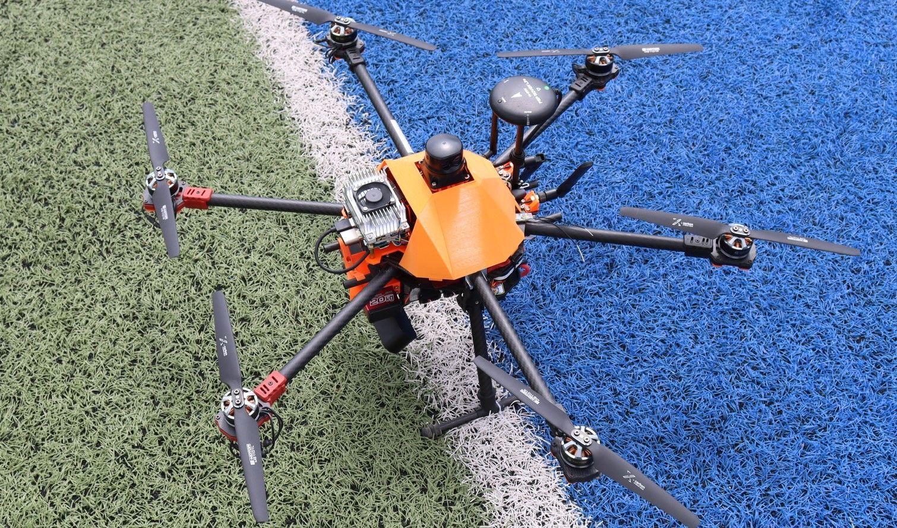

Raytheon Drone Competition

I am thrilled to be a part of a dynamic team working on an ambitious school final project in collaboration with Raytheon, an industry leader in technology and innovation. Our project is developing an autonomous drone and land rover to compete in a competition next summer. The goal is to demonstrate the cutting-edge capabilities of our technology by navigating the drone through challenging scenarios and utilizing computer vision to locate and disable enemy ground vehicles with precision. This project represents a remarkable fusion of engineering and computer science innovation.
As a pivotal member of our multidisciplinary team, I helped to bridge the gap between Computer Science (CS) and Electrical and Computer Engineering (ECE) domains. Drawing from my prior involvement in robotics, I seamlessly collaborate with both teams to implement software tailored for mechanical applications. In my role within the CS team, I've completed essential tasks such as flashing the drone's computer and preparing it for autonomous programming. My experience with robotics has afforded me a unique perspective, and understanding the software needed the ECE team.
My upcoming responsibilities on this project include the development of computer vision features for the drone. Leveraging insights from my robotics background, I contribute to the seamless integration of software that empowers the drone to identify and engage enemy ground vehicles. The intersection of computer vision, artificial intelligence, and robotics is an exciting frontier that I navigate with confidence. This technology will not only enhance our drone's capabilities but also showcase the power of interdisciplinary collaboration.
I'm excited to be part of a collaborative team working on an autonomous drone and ground vehicle project in partnership with Raytheon. Our goal is to compete in a challenging competition next summer. My focus on integrating computer vision technology stems from a deep understanding of software requirements derived from my robotics background. This project embodies innovation and teamwork across various engineering disciplines, and I'm eager to share our progress as we push the boundaries of autonomous technology.